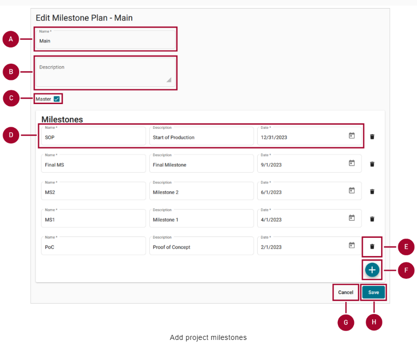
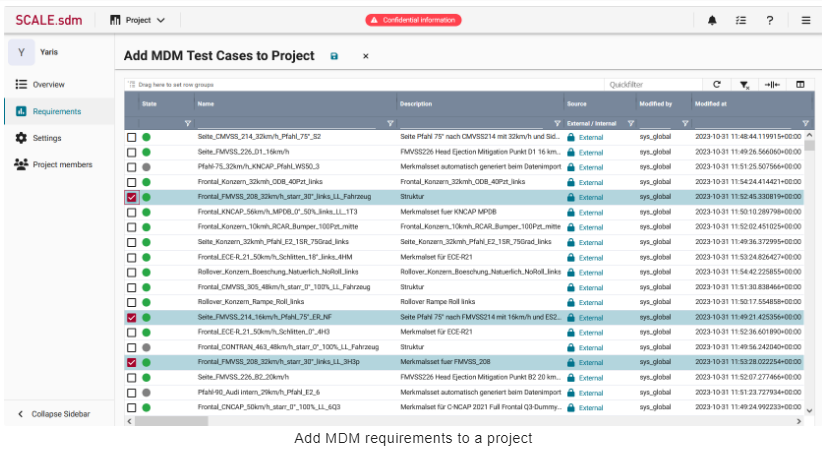
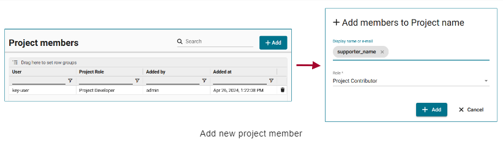
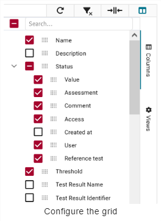
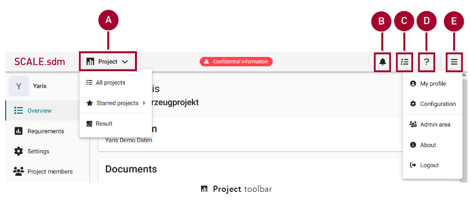
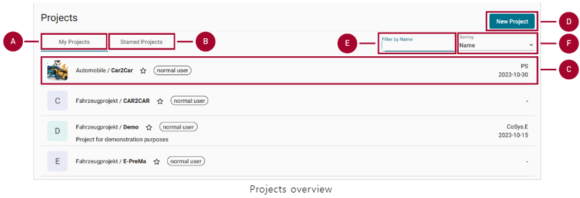
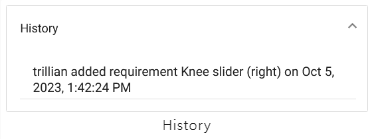
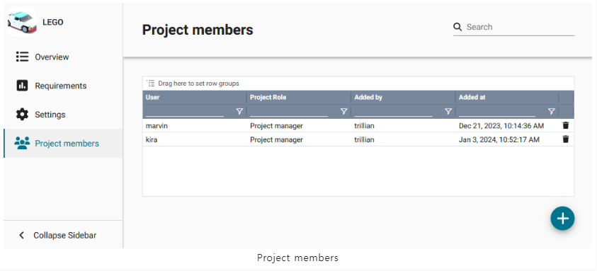
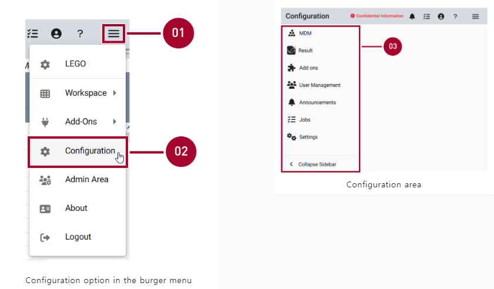

SCALE.project
Basic concepts
Systems Engineering in the Automotive Industry
시스템 엔지니어링은 제품 개발, 특히 주문자 상표 부착 생산업체(OEM)에서 중추적인 역할을 담당합니다. 시스템 엔지니어링은 전체 수명 주기 동안 복잡한 시스템을 설계, 통합 및 관리하는 데 중점을 둔 총체적이고 학제적인 접근 방식입니다.
새로운 제품을 설계하든 단일 제품 구성 요소를 수정하든 시스템 엔지니어링은 다양한 requirements의 균형을 맞추고 여러 관점에서 프로젝트를 보기 위해 노력합니다. 고객이 원하고 기대하는 기능은 무엇인가요? 어떤 안전 및 규정 준수 표준을 충족해야 하는가? 생산은 언제 시작될 예정인가요?
Test cases
안전 및 규정 준수 표준에 대해 자세히 살펴봅시다. 자동차를 설계하면서 충돌 안전성을 테스트하고 싶다고 가정해 보겠습니다. 구체적으로 시속 56km로 단단한 장벽에 충돌했을 때 자동차가 어떻게 작동하는지 알고 싶다고 가정해 보겠습니다. 테스트 케이스는 충돌 테스트를 설정하는 방법과 충돌 테스트가 수행되는 조건(예: 장벽, 속도, 온도 및 충격 각도)을 정의합니다.
충돌 테스트가 진행되는 동안 센서와 장치는 더미가 받는 손상 정도를 측정합니다. 예를 들어 충돌 시 운전자의 가슴이 얼마나 휘어지는지 또는 운전자의 대퇴골에 가해지는 힘의 양을 측정할 수 있습니다. 가슴 편향과 대퇴골 힘과 같은 각 측면을 requirements이라고 하며, 허용되는 값의 범위와 허용되지 않는 값의 범위가 있습니다.
Requirements
requirements은 단독으로 존재하지 않습니다. 오히려 특정 테스트 사례와 관련하여 정의됩니다. 예를 들어 시속 56km/h 정면 충돌 테스트에서 가슴 편향값은 허용 범위 내에 있어야 합니다. 제품 개발의 일부는 향후 제품이 충족해야 하는 requirements을 정의하는 것입니다.

Assessment
충돌 테스트 중에 각 요건이 측정되고 값을 받습니다. 예를 들어 충돌 테스트 더미의 가슴이 46mm 휘어진 경우 이 값이 requirements의 현재 상태로 저장됩니다.
그런 다음 현재 상태를 허용 가능한 값과 허용되지 않는 값의 범위와 비교하여 실제 값이 목표 값과 얼마나 다른지 확인할 수 있습니다. 프로젝트 관리자는 언제든지 테스트 케이스를 보고 얼마나 많은 requirements이 충족되었는지 확인할 수 있습니다.
Initial configuration
Note
관리자와 같이 포괄적인 권한을 가진 사람이 처음에  Project를 구성해야 합니다. 이 사람은 속성, requirements 및 테스트 케이스와 같은 마스터 데이터를 만들고 수정할 수 있는 권한이 있어야 합니다. 이 초기 구성이 완료되면 관리자는 프로젝트 관리자 및 프로젝트 기여자를 위한 계정 등 추가 사용자 계정을 만들 수 있습니다.
Project를 구성해야 합니다. 이 사람은 속성, requirements 및 테스트 케이스와 같은 마스터 데이터를 만들고 수정할 수 있는 권한이 있어야 합니다. 이 초기 구성이 완료되면 관리자는 프로젝트 관리자 및 프로젝트 기여자를 위한 계정 등 추가 사용자 계정을 만들 수 있습니다.
초기 구성은 예를 들어 다음과 같은 순서로 완료 할 수 있습니다.
Create MDM attributes
Configuration > MDM > Attributes로 이동합니다.
상단 오른쪽에 New를 클릭하면 새로운 window가 나타납니다.
필요에 따라 설정을 구성합니다.
 를 클릭해서 설정을 저장합니다.
를 클릭해서 설정을 저장합니다.
MDM attributes에 대한 자세한 지침과 각 설정에 대한 설명은 여기에서 확인할 수 있습니다.
Create MDM requirements based on these attributes
Configuration > MDM > Requirements로 이동합니다.
New를 클릭합니다.
필요에 따라 설정을 구성합니다.
- 를 클릭해서 설정을 저장합니다.
MDM requirements에 대한 자세한 지침과 각 설정에 대한 설명은 여기에서 확인할 수 있습니다.
Group the requirements into MDM test cases
Configuration > MDM > Test cases로 이동합니다.
New를 클릭합니다.
테스트 케이스에 대한 정보를 추가하고 테스트 케이스에 포함해야 하는 requirements를 선택합니다.
- 를 클릭해서 설정을 저장합니다.
MDM test cases 구성에 대한 자세한 지침과 각 설정에 대한 설명은 여기에서 확인할 수 있습니다.
Create other user accounts and grant permissions
Configuration > User Management > Users로 이동합니다.
New를 클릭합니다.
필요에 따라 설정을 구성합니다.
- 를 클릭해서 설정을 저장합니다.
MDM user accounts 구성에 대한 자세한 지침과 각 설정에 대한 설명은 여기에서 확인할 수 있습니다.
Set up a project
Project managers set up the project
Project는 처음에 project 설정을 추가, 변경 및 삭제할 수 있는 권한이 있는 사용자(예: project 관리자)가 설정합니다. project가 설정되면 project 관리자는 project에 다른 멤버를 추가할 수 있습니다.
예를 들어 다음과 같은 순서로 프로젝트를 설정할 수 있습니다.
Create a new project
 Project를 열어 projects의 overview를 표시합니다.
Project를 열어 projects의 overview를 표시합니다.상단 오른쪽에 New Project를 클릭합니다.
생성할 project의 이름(Name)과 설명란(description)을 작성합니다.
Project 유형(type)을 드롭 다운 메뉴에서 선택합니다.
Create Project를 클릭합니다. project는 overview에 표시되고 다시 편집할 수 있습니다. 예를 들어 생성된 project에 이제 문서(documents), 속성(attributes), 마일스톤(milestones), 요구조건(requirements) 그리고 멤버들(members)을 추가할 수 있습니다.

Open an existing project
- Project를 열어 projects의 overview를 표시합니다.
선택사항으로 오른쪽 상단 모서리의 Filter by name 필드에 project 이름을 입력하거나 다음 예정된 마일스톤을 기준으로 project를 정렬할 수 있습니다. 이러한 옵션을 사용하면 원하는 project를 빠르게 찾을 수 있습니다.
목록에서 project의 이름을 클릭합니다. project가 열리고 왼쪽 사이드바에서 Overview가 자동으로 선택됩니다.
Star favorite projects
Project를 즐겨찾기 기능처럼 선호하는 주 project를 설정 할 수 있습니다.
Project를 열어 즐겨찾기 할 project의
 Star 마크를 클릭합니다.
Star 마크를 클릭합니다.즐겨찾기된 project는 상단 메뉴에서 Projects를 선택하면 나타나는 리스트 메뉴의 Starred Projects에 표시됩니다.
다시
Star 마크를 클릭하면 즐겨찾기를 해제할 수 있습니다.
Edit a project’s name or description
Project를 열어 왼쪽 사이드바(sidebar)에서 Settings를 클릭합니다.
Project 이름, 유형, 설명 및 이미지를 편집합니다.
- 를 클릭하여 변경된 사항을 저장합니다.
Manage project documents
Project를 엽니다. Overview는 자동으로 왼쪽 사이드바에서 선택됩니다.
Documents 섹션(section)을 찾습니다. 이곳에서 project 관련 문서를 관리합니다. 문서의 이름과 파일 형식, 문서를 추가한 사용자의 이름이 표 형식의 개요(overview)에 표시됩니다.
Add project attributes
프로젝트 속성(attribues)은 키-값 쌍(key-value pairs)을 사용하여 프로젝트 속성에 대한 기술적 설명을 가능하게 합니다. 이 정보를 통해 프로젝트를 분류하고 향후 관련 프로젝트 requirements을 파악할 수 있습니다.
자신의 프로젝트를 엽니다.
왼쪽 사이드바(sidebar)에서 Attributes를 클릭합니다.
Edit를 눌러 새 창을 띄웁니다.
 를 눌러 새 라인을 추가합니다.
를 눌러 새 라인을 추가합니다.왼쪽에 위치한 영역(field)에 속성(attribute)의 이름을 입력합니다. 해당 영역(field)는 자동완성 기능을 가지고 있습니다. 입력할 때 과거에 입력했던 항목들에서 예측해 표시해줍니다.
오른쪽에 위치한 드롭-다운(drop-down) 리스트에서 하나 혹은 두개 이상의 값들을 선택합니다.
Save를 클릭하여 속성들을 업데이트 합니다.

Configure MDM attributes in advance
MDM 속성들은 프로젝트에 추가하기 전에 **Configuration > MDM > Attributes에서 구성되어야 합니다. 이 초기 구성은 MDM 권한이 있는 사용자(ex. admin)가 수행합니다.
Milestones
Add project milestones
자신의 프로젝트를 엽니다. 왼쪽 사이드바(sidebar)에서 Overview가 자동으로 선택됩니다.
Milestones 섹션을 찾아
를 클릭하여 새 창을 표시합니다.(A)에 이름과 (B)에 설명(description)을 입력합니다.
하나의 단일 계획(plan)은 master(C)로 지정하여 가장 관련성이 높은 프로젝트 마일스톤이 포함되어 있음을 나타낼 수 있습니다. 마스터 계획은 시간 스케일(time scale)과 목록에서 가장 먼저 표시됩니다. 그리고 글꼴과 아이콘으로 강조 표시됩니다.
일정에 마일스톤을 원하는 수만큼 추가합니다. 각 마일스톤에 이름, 날짜, 설명을 입력합니다.(D)
Save (H)를 클릭하여 마일스톤 계획을 업데이트 합니다.

View milestones in the overview
자신의 프로젝트를 엽니다. Overview가 왼쪽 사이드바(sidebar)에서 자동으로 선택됩니다.
Milesones 섹션에서 모들 프로젝트 참가자들에 대한 프로젝트 일정의 개요를 확인할 수 있습니다.

A: 시간 스케일(time scale)의 그래픽 표현
B: 마일스톤에 마우스를 위치 시켰을 때 마일스톤에 대한 상세 정보가 표시됩니다.
C: 현재 날짜가 표시되며 수식선과 연결됩니다.
D: 네 가지 옵션이 표시됩니다.
 : Download plot as a .png
: Download plot as a .png : Zoom in
: Zoom in: Zoom out
 : Reset axes
: Reset axes
E: List of schedules: 시간 척도(time scale)의 그래픽 표현 아래에는 마일스톤 계획별로 정렬된 일정이 표시되며, 이를 펼치거나 접을 수 있습니다. 마일스톤 이름, 설명 및 날짜는 표 형식의 개요로 표시됩니다.
F: 존재하는 마일스톤 계획을 편집하기 위해 Edit을 클릭합니다.
G: 새 마일스톤 계획을 추가하기 위해
를 클릭합니다.이 아이콘의 표시는 사용자의 권한에 맞추어 표시됩니다.
Add requirements and test cases to the project
Requirements는 테스트 케이스(test cases)를 통해 프로젝트에 추가됩니다. 즉, 프로젝트에 테스트 케이스를 추가하면 해당 테스트 케이스에 포함된 모든 requirements도 자동으로 추가됩니다.
프로젝트를 엽니다.
왼쪽 사이드바(sidebar)에서 Requirements를 클릭합니다.
상단 오른쪽에 Add를 클릭합니다. **Add MDM Test Cases to Project 영역이 표시됩니다.
적절한 테스트 케이스 ()를 선택합니다.
- 를 클릭하면 테스트 케이스(test cases)에 포함된 모든 requirements가 자신의 프로젝트의 추가됩니다.

Requirements and test cases can be edited to make them project-specific
특정 프로젝트 내의 requirements 및 테스트 케이스(test cases)를 project requirements 및 project test cases라고 합니다. 이는 MDM requirements 및 MDM test cases에서 파생됩니다. 이 과정에서 모든 속성, 임계값 등이 복사되며 필요한 경우 추가로 변경할 수 있습니다.
Add project members
자신의 프로젝트를 엽니다.
왼쪽 사이드바(sidebar)에서 **Project members를 클릭합니다. 여기에서 프로젝트 접근 권환이 있는 모든 사용자들을 확인할 수 있습니다.
상단 오른쪽의 +ADD를 클릭하여 프로젝트에 새 멤버를 추가합니다. 새 창이 표시됩니다.
상단에 프로젝트에 추가할 사용자를 선택합니다. 사용자 이름으로 사용자들을 찾을 수 있으며 이름 및 이메일 주소로 표시됩니다.
하단에 사용자에 활당된 역할(role)을 선택합니다.
향후에 사용자의 role을 변경할 필요가 있을 경우 Project role 열의 role을 더블 클릭하여 변경할 수 있습니다.

Create user accounts and project roles in advance
사용자를 프로젝트에 추가하려면 먼저 Configuration > User Management > Users에서 사용자를 구성해야 합니다. 이 초기 구성은 해당 권한이 있는 사용자(예: admin)가 수행합니다.
프로젝트 role은 Configuration > User Management > Project roles에서 구성해야 사용자에게 할당할 수 있습니다. 이 초기 구성은 해당 권한이 있는 사용자(예: admin)가 수행합니다.
Tailor requirements to be project-specific
Project managers nad/or contributors can tailor requirements
프로젝트 관리자와 프로젝트 기여자 모두 프로젝트에 맞게 MDM requirements를 조정할 수 있습니다.
MDM requirements: Configuration > MDM > Requirements 아래의 requirements를 MDM requirements라고 합니다. requirements template 또는 SCALE.sdm 애플리케이션에 대한 global requirements 데이터베이스라고 생각할 수 있습니다.
Project requirements: 특정 프로젝트 내의 requirements를 project requirements이라고 합니다. 프로젝트 requirements은 MDM requirements에서 파생됩니다. 이 과정에서 원래 requirements의 속성, 임계값 등이 프로젝트별 requirements로 복사되며 필요한 경우 추가로 변경할 수 있습니다. 프로젝트에는 동일한 MDM requirements에서 파생된 여러 프로젝트 requirements이 있을 수 있습니다.
예를 들어 다음과 같은 순서로 프로젝트를 맞춤 설정 할 수 있습니다.
Open an existing project
- Project를 열어 프로젝트의 overview를 표시합니다.
오른쪽 상단 모서리의 이름으로 필터링 필드에 프로젝트 이름을 입력하거나 다음 예정된 마일스톤을 기준으로 프로젝트를 정렬할 수 있습니다. 이러한 옵션을 사용하면 원하는 프로젝트를 빠르게 찾을 수 있습니다.
목록에서 프로젝트 이름을 클릭합니다. 프로젝트가 열리고 왼쪽 사이드바에서 overview가 자동으로 선택됩니다.
View a requirement’s details
프로젝트를 엽니다.
왼쪽 사이드바(sidebar)에서 requirements를 클릭합니다. 여기에 프로젝트 requirements의 overview가 표시됩니다. 필요에 따라 이 개요에서 requirements을 필터링하거나 그룹화할 수 있습니다.
requirements를 클릭한 다음 requirements에 대한 자세한 정보를 보려면 requirement를 클릭합니다.
Edit a test case to be project-specific
프로젝트를 엽니다.
왼쪽 사이드바에서 Requirements을 클릭합니다.
Overview에서 requirement를 마우스 오른쪽 버튼으로 클릭합니다. 컨텍스트 메뉴가 열립니다.
**Edit test case [Name of test case]**을 클릭합니다. 새 창이 열립니다.
테스트 케이스가 프로젝트에 맞게 수정합니다.
- 를 클릭하여 설정을 저장합니다.
테스트 케이스 설정에 대한 자세한 지침은 MDM test cases 페이지에서 확인할 수 있습니다.

Edit the requirements to be project-specific
한번에 하나의 requirement를 편집하거나 여러 requirements를 동시에 편집할 수 있습니다.
Edit one requirement to be project-specific
자신의 프로젝트를 엽니다.
왼쪽 사이드바에서 Requirements을 클릭합니다.
Overview에서 requirements를 마우스 오른쪽 버튼으로 클릭합니다. 컨텍스트 메뉴가 열립니다.
Edit requirement을 클릭합니다. 새 창이 열립니다.
requirements를 프로젝트별로 수정합니다.
- 를 클릭하여 설정을 저장합니다.
requirement 설정에 대한 자세한 지침은 MDM requirements 페이지에서 확인할 수 있습니다.

Eidt multiple requirements at ones
프로젝트를 엽니다.
왼쪽 사이드바에서 Requirements을 클릭합니다.
여러 requirements를 선택한 다음(Ctrl. + 클릭) 마우스 오른쪽 버튼을 클릭합니다. 컨텍스트 메뉴가 열립니다.
Edit requirements을 클릭합니다. 새 창이 열립니다. 여기에서 선택한 모든 requirements의 이름, 설명 및 평가 임계값(thresholds)을 동시에 편집할 수 있습니다.
Edit the names
상단 박스를 선택합니다.
첫번째 드롭-다운 리스트에서 Change to apply에서 옵션을 선택합니다.
Replace: requirement 이름 내에서 특정 단어 하나를 변경합니다.
Replace all: 전체 requirement 이름을 변경합니다.
Add to beginning: requirement 이름의 시작 부분에 특정 텍스트를 추가합니다.
Add to end: requirement 이름 끝에 특정 텍스트를 추가합니다.
텍스트 영역(text filed)에 자신의 텍스트를 입력합니다.
- 를 클릭하여 설정을 저장합니다.
Edit the descriptions
중간 박스를 선택합니다.
Description에 텍스트를 입력합니다.
- 를 클릭하여 설정을 저장합니다.

Edit the assessment thresholds
Apply Changes to all Assessments 영역을 펼칩니다.
아래쪽 상자를 선택합니다.
필요에 따라 평가 임계값(assessment thresholds)을 수정합니다. 자세한 지침은 MDM requirements 페이지에서 확인할 수 있습니다.
- 를 클릭하여 설정을 저장합니다.
Configure the requirements grid
Project managers and/or contributors can configure the grid
프로젝트 관리자와 프로젝트 기여자 모두 열을 재정렬하고 필터를 적용하는 등 requirements grid를 구성할 수 있습니다.
Requirements grid는 예를 들어 다음과 같은 순서로 구성할 수 있습니다.
Basic concept
Grid의 각 줄은 하나의 requirement(B)을 나타내고, 각 열은 requirement(A)에 대한 하나의 정보를 나타냅니다. 때로는 일부 열만 표시하고 다른 열은 숨기는 것이 도움이 될 수 있습니다. 필요에 따라 grid를 사용자 지정할 수 있습니다.

Grid 구성을 완료한 후에는 구성(configuration)을 ‘View’라는 이름으로 저장하고 이 view를 다른 사용자와 공유할 수도 있습니다. 이렇게 하면 나중에 구성에 다시 액세스할 수 있습니다. 예시: 서로 다른 두 개의 views를 만들 수 있습니다. 각 view에는 특정 작업에 필요한 열만 포함됩니다. 작업을 수행할 때 적절한 view를 선택하기만 하면 됩니다.
What does the view define?
View는 레이아웃(layout)의 다음 측면을 제어합니다.
표시될 열
열이 표시되는 순서
열을 그룹화할지에 대한 여부
필터 적용 여부
열 내용을 오름차준 또는 내림차순으로 표시할지 여부
Note: View는 열의 크기를 제어하지 않습니다.
What does the view define?
SCALE.sdm에는 여러가지 grid가 있습니다. 예를 들어,  Project에는 requirements grid가 있고 Configuration > MDM > Requirements 아래에 grid가 있습니다. 각 grid는 개별적으로 구성해야 합니다. View는 모든 grid에 저장되지 않습니다.
Project에는 requirements grid가 있고 Configuration > MDM > Requirements 아래에 grid가 있습니다. 각 grid는 개별적으로 구성해야 합니다. View는 모든 grid에 저장되지 않습니다.
Toggle and rearrange the columns
프로젝트를 엽니다.
Requirements를 클릭합니다.
grid의 오른쪽 사이드의
 를 클릭하면 사이드바가 표시됩니다.
를 클릭하면 사이드바가 표시됩니다.표시할 열을 선택하여 체크 표시(
 )가 되도록 합니다.
)가 되도록 합니다.Optional: 마우스 커서를
 에 가져가면 커서가
에 가져가면 커서가  로 바뀌며 드래그 하여 그리드에서 열의 순서를 바꿀 수 있습니다.
로 바뀌며 드래그 하여 그리드에서 열의 순서를 바꿀 수 있습니다.

Group requirements by column headers
프로젝트를 엽니다.
Requriements를 클릭합니다.
마우스 커서를 열의 헤더(header)에 위치시키면 커서가 로 바뀝니다.
열의 헤더를 드래그 하여 그리드 상단의 Drag hear to set row groups로 드롭합니다. 데이터들은 해당 열에 의해 그룹화 되어 표시됩니다.
필요에 따라 다른 열에 대해서도 같은 방법으로 그룹화 할 수 있습니다.

Alternative to drag & drop
다음고 같이 열 헤더에 의한 그룹화를 진행 할 수 있습니다.
프로젝트를 엽니다.
Requirements를 클릭합니다.
마우스 커서를 위로 위치시키고 클릭하여 컨텍스트 메뉴를 표시합니다.
Group by [column name] 옵션을 선택합니다. Grid에서 데이터는 해당 열에 의해 그룹화 됩니다.
필요에 따라 다른 열에 대해서도 같은 방법으로 그룹화 할 수 있습니다.
Apply column filters
프로젝트를 엽니다.
Requirements를 클릭합니다.
열 헤더(header) 바로 아래 줄에 텍스트를 입력합니다.
선택 사항으로 추가 필터 옵션에 액세스하려면
 를 클릭합니다.
를 클릭합니다.필요한 경우 같은 방법으로 다른 열에도 필터를 적용합니다.

Change the sorting order
프로젝트를 엽니다.
왼쪽 사이드바에서 Requirements을 클릭합니다.
오름차순으로 정렬하려면 열 헤더를 클릭합니다.
내림차순으로 정렬하려면 두 번 클릭합니다.
정렬을 제거하려면 세 번 클릭합니다.
Sort multiple columns
여러 열을 기준으로 정렬할 수도 있습니다. 예를 들어, 먼저 대상 시장(target market)별로 requirements를 정렬할 수 있습니다. 그런 다음 여러 requirements가 동일한 시장에 적용되는 경우 알파벳 순서로 정렬할 수 있습니다.
프로젝트를 엽니다.
왼쪽 사이드바에서 requirements를 클릭합니다.
열 헤더를 클릭하여 데이터를 정렬합니다. 예를 들어, 대상 시장별로 requirements를 정렬합니다.
Shift 키를 누른 상태에서 다른 열 머리글을 클릭하여 두 번째 수준별로 정렬합니다. 예를 들어 동일한 시장에 여러 requirements가 적용되는 경우 이름별로 알파벳순으로 정렬할 수 있습니다. 참고: 열 레이블 오른쪽에 표시되는 숫자는 정렬이 적용되는 순서를 나타냅니다. 이를 통해 여러 열에서 정렬 순서를 이해하는 데 도움이 됩니다.
필요한 경우 Shift 키를 누른 상태에서 추가 열 헤더을 계속 클릭합니다.

Save your configuration as a view
프로젝트를 엽니다.
Requirements를 클릭합니다.
Grid 상단 오른족의
를 클릭하고 사이드 바를 표시합니다. Views를 클릭합니다. 존재하는 모든 뷰(view)가 리스트로 표시됩니다.
Views를 클릭합니다. 존재하는 모든 뷰(view)가 리스트로 표시됩니다. New View를 클릭합니다.
New View를 클릭합니다.뷰(view)에 대한 이름을 입력하고 Save를 클릭합니다. 자신의 view가 리시트에 추가됩니다.
What is the default view?
Views 목록에는 기본값(default)이라는 항목이 있습니다. 아직 사용자 지정 보기(views)를 구성하지 않은 경우 기본 보기(default views)가 사용됩니다. 글로벌 관리자만 기본 보기를 만들거나 수정할 수 있습니다. 일반 사용자는 이 보기를 편집할 수 없습니다.

Share views with other users
다른 사용자와 보기(views)를 공유할 수 있습니다. 예를 들어 관리자는 여러 개의 서로 다른 보기를 만들 수 있습니다. 각 보기에는 특정 작업을 수행하는 데 도움이 되는 열과 필터가 포함되어 있습니다. 그런 다음 관리자는 이러한 보기를 해당 작업을 담당하는 동료들과 공유할 수 있습니다.
프로젝트를 엽니다.
왼쪽 사이드바에서 Requirements을 클릭합니다.
Grid의 맨 오른쪽의
클릭합니다. 사이드 바가 표시됩니다.- Views를 클릭합니다. 여기에 모든 기존 뷰(views) 목록이 표시됩니다.
보기에 대한 추가 옵션을 보려면 를 클릭합니다.
 Share를 클릭합니다. 팝업 창이 열립니다.
Share를 클릭합니다. 팝업 창이 열립니다.드롭다운 목록에서 분야(discipline)를 선택합니다.
Confirm을 클릭합니다. view가 해당 분야(discipline)의 모든 사용자와 공유됩니다.
Report the current requirement status
Project contributors can save the requirement staus
일반적으로 프로젝트 기여자(project contributors)는 프로젝트 requirement의 상태를 저장합니다. 상태는 특정 시점의 실제 값을 나타냅니다. 이 값에는 코멘트나 첨부 파일과 같은 선택적 속성이 첨부될 수 있습니다. 이 값은 기존 임계값(thresholds)과 비교되며 결과에 따라 빨간색, 노란색 또는 녹색과 같은 특정 색상으로 표시됩니다.
Requirement 상태는 예를 들어 다음과 같은 순서로 저장할 수 있습니다.
Open an existing project
- Project를 엽니다.
선택사항 : Filter by name에 프로젝트 이름을 입력하거나 다음 예정된 마일스톤을 기준으로 프로젝트를 정렬할 수 있습니다.
리스트의 프로젝트 이름을 클릭합니다. 선택한 프로젝트가 열리면서 왼쪽 사이드바의 Overview가 자동으로 선택됩니다.
View the status of a requirement
Requirement의 상태를 확인하는 다음과 같은 방법들이 있습니다.
View the status of one single requirement
프로젝트를 엽니다.
왼쪽 사이드바에서 Requirements를 클릭합니다. 여기에서 프로젝트 requirement의 개요를 볼 수 있습니다. 필요에 따라 이 개요에서 requirement을 필터링하거나 그룹화할 수 있습니다.
Requirement를 클릭하고 를 클릭하면 상세 정보를 확인할 수 있습니다.
View the status of requirement groups
대부분의 경우 각 requirement를 개별적으로 살펴보지 않습니다. 그보다는 테스트 케이스(test case)별로 requirement를 그룹화할 것입니다. 이 그룹화된 보기 내에서 각 그룹은 상태(예: 빨간색, 노란색 또는 녹색)를 받습니다. 이렇게 하면 어떤 그룹에 더 많은 주의가 필요한지 즉시 파악할 수 있습니다.
프로젝트를 엽니다.
왼쪽 사이드바에서 Requirements를 클릭합니다.
하나 이상의 열 헤더(column header)를 기준으로 requirement을 그룹화합니다.
그룹을 확장하면 각 개별 requirement의 상태(예: 빨간색, 노란색 또는 녹색)가 표시되고 그룹에도 상태가 표시됩니다. 그룹의 상태는 집계됩니다. 즉, 그룹은 자동으로 최악(worst)의 상태를 상속받습니다.
예제 이미지에서 그룹에는 녹색 requirement 3개, 노란색 requirement 5개, 빨간색 requirement(B) 1개가 포함되어 있습니다. 빨간색 상태는 그룹 내에서 가장 나쁜 상태이므로 그룹은 자동으로 빨간색 상태(A)를 상속합니다.
Notes about the group status
일부 그룹에는
 가 표시됩니다. 이는 그룹에 평가 색상이 수동으로 선택된 requirements이 하나 이상 포함되어 있음을 의미합니다.
가 표시됩니다. 이는 그룹에 평가 색상이 수동으로 선택된 requirements이 하나 이상 포함되어 있음을 의미합니다.공개(public) 및 비공개(private) 상태가 모두 집계됩니다. 즉, 그룹은 공개 또는 비공개 여부에 관계없이 자동으로 최악의(worst)의 상태를 상속받게 됩니다.
View aggregated statuses in the sidebar
프로젝트를 엽니다.
Requirements를 클릭합니다. 여기에 프로젝트 requirements의 overview가 표시됩니다. 필요에 따라 이 개요에서 requirements을 필터링하거나 그룹화할 수 있습니다.
여러 requirements을 선택한 다음(Ctrl. + 클릭) << 클릭하면 이러한 requirements의 집계된 상태를 볼 수 있습니다. 프로젝트 상태 요약(overview)이 사이드바에 표시됩니다.
선택한 프로젝트 requirements의 수 및 집계된(aggregated) 상태
다양한 상태의 수와 비율을 보여주는 막대형 차트

Manually report the status
프로젝트 requirements의 상태를 보고할 수 있습니다. 상태는 특정 시점의 실제 값을 나타냅니다. 이 값은 코멘트나 첨부 파일과 같은 선택적 속성과 함께 표시될 수 있습니다. 이 값은 기존 임계값과 비교되며 결과에 따라 빨간색, 노란색 또는 녹색과 같은 특정 색상으로 표시됩니다.
팁: 다양한 requirements의 상태를 보고해야 하는 경우에는 먼저 필요에 맞게 특별히 맞춤화된 보기를 만드는 것이 좋습니다.
프로젝트를 엽니다.
Requirements를 클립합니다. 여기에서 프로젝트 requirements의 개요를 볼 수 있습니다. 필요에 따라 이 개요에서 requirements을 필터링하거나 그룹화할 수 있습니다.
requirement(예: ‘chest deflection’)을 클릭한 다음 **<<**에서 requirement에 대한 자세한 정보를 확인합니다.
Report Status 버튼을 클릭합니다. 화면이 변경됩니다.
상태에 대한 값을 입력합니다. 예를 들어 충돌 테스트 더미의 가슴이 -46mm 휘어진 경우 이 값을 requirement의 현재 상태로 입력합니다. 평가 원(assessment circle)이 자동으로 색상이 변경되어 해당 값이 requirement의 임계값과 어떻게 일치하는지 보여줍니다.
Optional: 자동 평가(assessment)를 수동으로 재정의하려면 평가 원(assessment circle)을 클릭하고 다른 색상을 선택합니다. 참고사항으로 수동으로 선택한 평가는 requirements 그리드에서 기호로 표시됩니다.
Optional: Add Files를 클릭하여 관련 문서 또는 보고서를 첨부합니다.
Save Private 또는 Save Public을 클릭하여 상태를 저장합니다. 비공개(private) 및 공개(public) 상태에 대한 자세한 내용은 아래에서 확인할 수 있습니다.
Requirements without numerical values
위의 지침은 requirement의 상태를 숫자 값으로 저장하는 방법을 알려줍니다(예: -46mm의 가슴 처짐). 그러나 일부 requirement에는 숫자 값이 없습니다. 대신 “예” 또는 “아니오”와 같은 가능한 옵션 목록에서 값을 가져옵니다. 이러한 requirement의 상태를 저장하는 것도 가능합니다. 유일한 차이점은 숫자 값을 입력하는 대신 드롭다운 목록에서 값을 선택한다는 것입니다.
Change a status from private to public
프로젝트를 엽니다.
왼쪽 사이드바에서 Requirements을 클릭합니다. 여기에 프로젝트 requirements의 개요(overview)가 표시됩니다. 필요에 따라 이 개요에서 requirements을 필터링하거나 그룹화할 수 있습니다.
requirement을 마우스 오른쪽 버튼으로 클릭하여 컨텍스트 메뉴를 표시합니다.
Set public을 클릭합니다. 비공개(private) 항목이 공개(public)로 표시되는 즉시 항목의 타임스탬프(timestamp)가 현재 시간으로 설정됩니다.
Private entries vs. public entries
비공개(Private) 항목:
생성한 사용자만 볼 수 있음
편집 및 삭제 가능
requirement와 user에 대해서 한 번만 존재할 수 있습니다. 즉, 동일한 요건에 대해 다른 비공개(private) 상태를 보고(report)하면 기존 상태를 덮어쓰게 됩니다. 기존 상태를 덮어쓰지 않으려면 동일한 요건에 대한 다른 비공개(private) 항목을 보고(report)하기 전에 해당 상태를 공개(public)로 설정하세요.
공개(Public) 항목
requirement에 접근할 수 있는 모든 사용자가 볼 수 있습니다.
사용자에 관계없이 편집하거나 삭제할 수 없습니다.
Monitor project status over time
시간 경과에 따른 프로젝트의 상태를 추적할 수 있습니다. 즉, 프로젝트의 현재 상태를 이전 날짜의 상태와 비교할 수 있습니다. 예를 들어, 특정 requirement을 살펴보고 그 값이 한 마일스톤에서 다음 마일스톤으로 어떻게 변경되었는지 확인할 수 있습니다.
프로젝트를 엽니다.
왼쪽 사이드바에서 Requirements를 클릭합니다.
마일스톤을 클릭하여 영역을 확장합니다. 여기에는 마스터(master)로 설정된 마일스톤 계획만 표시됩니다. 계획이 표시되지 않으면 계획이 마스터로 활성화되어 있는지 확인하세요.
Optional: ** + More schedules**를 클릭하고 필요에 따라 추가 타임라인들을 선택합니다.
Optional: 를 클릭하고 캘린더(calendar)에서 날짜를 선택합니다. 또는 날짜 선택 필드에 날짜를 직접 입력합니다. 월/일/년(예: 1/31/2024)과 같은 날짜 형식을 사용합니다.
requirement 상태가 선택한 날짜의 값을 표시하도록 변경됩니다. 그에 따라 마일스톤 타임라인에 날짜 표시기(진한 파란색 선)가 배치됩니다.

User interface
 Project의 사용자 인터페이스는 다음의 요소들로 구성됩니다.
Project의 사용자 인터페이스는 다음의 요소들로 구성됩니다.
A: 화면 상단에는 Toolbar가 위치합니다.
B: 메인 윈도우(main window)입니다. 메인 윈도우는 다음 항목들을 표시합니다.
모든 프로젝트의 목록 (예 : project selection)
특정 프로젝트에 대한 상세 (예 : project view)

Tool bar
사용자 인터페이스(User interface) 상단에는 위치가 고정되어 있고 일반적인 애플리케이션 기능 및 메뉴가 포함된 도구 모음이 있습니다.

A: Project
프로젝트에서 다음 옵션에 접근할 수 있습니다.
 All projects: open an existing project 또는 create a new project를 할 수 있습니다.
All projects: open an existing project 또는 create a new project를 할 수 있습니다.- Starred project: 관심 프로젝트로 선택한 프로젝트를 직접 열 수 있습니다.
 Result: 에서 로 이동할 수 있습니다.
Result: 에서 로 이동할 수 있습니다.
B: Notifications
 를 클릭하여 Notifications를 을 엽니다. 여기에서 공지 사항 및 작업 알림 목록을 볼 수 있습니다. 알림에 대한 자세한 정보를 확인하세요
를 클릭하여 Notifications를 을 엽니다. 여기에서 공지 사항 및 작업 알림 목록을 볼 수 있습니다. 알림에 대한 자세한 정보를 확인하세요
C: Jobs
 를 클릭하여 Jobs 영역을 엽니다. 여기에서 애드온이나 사용자 입력에 의해 트리거되는 등 애플리케이션에서 실행 중인 작업 목록을 볼 수 있습니다. 작업 상태(보류 중, 실행 중, 성공, 실패)가 동적으로 표시됩니다. 여기에서 작업 로그 파일에 액세스하고 작업 아티팩트(artifacts)를 다운로드할 수 있습니다. 작업에 대한 자세한 정보를 확인하세요
를 클릭하여 Jobs 영역을 엽니다. 여기에서 애드온이나 사용자 입력에 의해 트리거되는 등 애플리케이션에서 실행 중인 작업 목록을 볼 수 있습니다. 작업 상태(보류 중, 실행 중, 성공, 실패)가 동적으로 표시됩니다. 여기에서 작업 로그 파일에 액세스하고 작업 아티팩트(artifacts)를 다운로드할 수 있습니다. 작업에 대한 자세한 정보를 확인하세요
D: Help
 를 클릭하면 SCALE.sdm의 매뉴얼을 확인할 수 있습니다.
를 클릭하면 SCALE.sdm의 매뉴얼을 확인할 수 있습니다.
E: Burger menu
를 클릭하면 다음 옵션들에 접근할 수 있습니다.
 My profile: 개인 설정을 엽니다. 여기에서 비밀번호를 변경하고 access token을 관리할 수 있습니다.
My profile: 개인 설정을 엽니다. 여기에서 비밀번호를 변경하고 access token을 관리할 수 있습니다. Configuration: configuration 영역을 엽니다. 키(key) 사용자 또는 관리자와 같이 해당 권한이 있는 사용자는 여기에서 처음에 SCALE.sdm을 구성할 수 있습니다. 예를 들어, 마스터 데이터를 저장하고, 애드온을 설치하고, 사용자 계정을 관리할 수 있습니다.
Configuration: configuration 영역을 엽니다. 키(key) 사용자 또는 관리자와 같이 해당 권한이 있는 사용자는 여기에서 처음에 SCALE.sdm을 구성할 수 있습니다. 예를 들어, 마스터 데이터를 저장하고, 애드온을 설치하고, 사용자 계정을 관리할 수 있습니다.Admin area: 이 항목은 Staff로 지정된 사용자만 볼 수 있습니다.
 About: 애플리케이션에 대한 정보를 확인합니다. 여기에서 현재 설치된 버전을 확인할 수 있습니다. 애플리케이션과 관련된 오픈 소스 소프트웨어 및 라이선스에 대한 정보도 볼 수 있습니다.
About: 애플리케이션에 대한 정보를 확인합니다. 여기에서 현재 설치된 버전을 확인할 수 있습니다. 애플리케이션과 관련된 오픈 소스 소프트웨어 및 라이선스에 대한 정보도 볼 수 있습니다. Logout: 애플리케이션에서 로그아웃 합니다.
Logout: 애플리케이션에서 로그아웃 합니다.
Project selection
tool bar에서  All projects를 클릭하면 모든 프로젝트의 개요에 접근할 수 있습니다.
All projects를 클릭하면 모든 프로젝트의 개요에 접근할 수 있습니다.

A: 모든 프로젝트들의 목록
B: 사용자가 관심 항목으로 등록한 모든 프로젝트들의 목록
C: 프로젝트 정보
프로젝트 아이콘
프로젝트 유형 / 프로젝트 이름
관심 항목 등록 및 해제 아이콘
현재 사용자의 프로젝트 역할
우측 정렬된 항목: 다음에 예정된 마일스톤
D: 새 프로젝트를 만들기 위한 버튼
E: 목록에 표시될 프로젝트를 필터링 하기 위한 이름을 입력
F: 프로젝트 목록을 분류하기 위한 메뉴
Name - 프로젝트 이름의 알파벳 순서대로 정렬됩니다.
Next milestone - 다음에 예정된 마일스톤을 기준으로 프로젝트를 시간순으로 정렬합니다.
Project view
프로젝트 뷰(project view)의 왼쪽 사이드 바에는 다음의 다섯가지 메뉴가 있습니다.
A: Overview
B: Attributes
C: Requirements
D: Settings
**Collapse sidebar (F)**를 클릭하면 사이드바를 축소하여 각 보기에 더 많은 공간을 확보할 수 있습니다.
Overview
프로젝트를 선택하면 개요(overview)가 자동으로 표시됩니다. 프로젝트 개요에는 다음 패널이 표시됩니다.
A: Description
B: Documents
C: Milesontes
A: Description
A: 프로젝트 아이콘, 이름과 유형
B: 프로젝트 설명을 위한 자유 텍스트 필드(free text field)와 일반적으로 프로젝트 범위를 포함합니다.
B: Documents
프로젝트 관련 문서를 관리할 수 있습니다. 문서의 이름과 파일 유형, 문서를 추가한 사용자의 이름이 표 형식의 개요에 표시됩니다.
C: Milestones
모든 프로젝트 참여자의 프로젝트 일정에 대한 개요를 볼 수 있습니다. 프로젝트 마일스톤에 대한 자세한 정보를 확인하세요.

Attributes
Attributes 영역에서 프로젝트에 속성을 추가할 수 있습니다. 이를 통해 프로젝트를 분류하고 향후 관련 프로젝트 requirements를 파악할 수 있습니다. 프로젝트 속성 추가에 대한 자세한 정보를 확인하세요.

Requirements
Requirements 영역은 다음 요소들을 포함합니다.

A: Milestones
요소(element)를 클릭하여 확장 및 축소할 수 있습니다. 기본적으로 마스터 플래그가 지정된 시간 스케줄이 표시됩니다. 선택적으로 추가 마일스톤을 표시할 수 있습니다. requirements가 있는 마일스톤 보기에 대한 자세한 내용을 참조하세요.
B: Requirements grid
Requirements 그리드는 필요에 맞게 사용자 지정을 할 수 있습니다. 예를 들어 그리드에 표시할 열을 결정할 수 있으며 필터를 사용하여 특정 requirement만 표시할 수 있습니다. requirement 그리드 사용자 지정에 대한 자세한 내용을 참조하세요.
B1: Groups: group your requirements by column headers로 열(column)을 드래그 앤 드롭 하세요.
B2: Column header: 열 헤더에는 열 캡션(caption)이 표시됩니다. 그리드에 표시할 열을 설정할 수 있으며 오름차순 및 내림차순으로 열을 정렬할 수 있습니다.
B3: Quickfilter: 빠른 필터(quick filter)를 사용하면 검색어를 기준으로 전체 그리드 컨텐츠를 필터링 할 수 있습니다.
B4: Reset grid to preset:
를 프리셋(preset)으로 되돌리기 위해  를 클릭합니다. Project의 requirement 그리드에서는 해당 버튼은 아무 기능도 하지 않습니다.
를 클릭합니다. Project의 requirement 그리드에서는 해당 버튼은 아무 기능도 하지 않습니다.B5: Clear all filters: 열의 헤더에서 quick 필터와 모든 필터들을 되돌리기 위해 를 클릭합니다. 만약 필터가 설정되어 있다면 아이콘은 빨간색입니다.
B6: Autosize all columns: 열의 컨텐츠들에 대해서 열의 너비가 조정됩니다.
B7: Columns: 표시하거나 하지 않은 열을 선택하기 위한 토글(toggle)창을 표시하기 위해 를 클릭합니다. 여기에서 구성한 보기(view)를 저장할 수 있습니다.

D: Side panel
requirement를 클릭한 다음 로 측면 패널(side panel)을 확장하여 requirement에 대한 자세한 정보를 확인합니다. 측면 패널을 다시 축소하려면 클릭합니다.

Status
선택한 requirement의 현재 상태가 여기에 표시됩니다. 상태는 특정 시점의 실제 값을 나타냅니다. 이 값에는 주석(comment)이나 첨부 파일과 같은 선택적 속성이 함께 표시될 수 있습니다. 이 값은 기존 임계값과 비교되며 결과에 따라 빨간색, 노란색 또는 녹색과 같은 특정 색상으로 표시됩니다. 이 영역에는 다음과 같은 정보가 표시됩니다.
현재 값, 주석(comment) 그리고 업로드된 문서들
사용자와 최근 상태에 대한 날짜 - 자동으로 문서화됨
상태를 수동으로 보고(report)하기 위한 버튼

Details
세부 정보 패널에는 이름, 설명 및 테스트 결과의 식별자와 같은 추가 requirement 속성이 표시됩니다. Requirements에서 확인하세요.

Threadholds
여기에는 requirements 결정에 대한 제한 또는 기준에 대한 자세한 정보가 나와 있습니다. 현재 프로젝트 상태의 경우 임계값의 구성에 따라 평가(assessment)가 계산됩니다.
Context
이 패널에는 requirement 범위(scope) 및 콘텐츠를 설명하는 데 사용되는 속성과 값이 표시됩니다. MDM requirements을 참조하세요.

History
requirements의 변경 사항은 기록 패널(history panel)에서 추적할 수 있습니다. 여기에는 다음 정보가 문서화되어 있습니다.
변경을 수행한 사람의 이름
변경 유형 및 변경 날짜

Attachments
이 패널에는 MDM requirements에 첨부된 문서가 표시되어 requirement에 대한 일반적인 정보를 제공합니다.

Context menu
개요(overview)에서 requirement을 마우스 오른쪽 버튼으로 클릭하여 상황에 맞는 메뉴에 접근합니다. 컨텍스트(context) 메뉴에는 다음과 같은 옵션이 포함되어 있습니다.
 Edit test case: 테스트 케이스(test case)를 프로젝트별로 편집할 수 있는 창을 엽니다.
Edit test case: 테스트 케이스(test case)를 프로젝트별로 편집할 수 있는 창을 엽니다. Duplicate test case: 테스트 케이스(test case)의 복사본을 생성하고 해당 복사본의 설정을 편집할 수 있는 창을 엽니다.
Duplicate test case: 테스트 케이스(test case)의 복사본을 생성하고 해당 복사본의 설정을 편집할 수 있는 창을 엽니다.Remove test case: 프로젝트에서 테스트 케이스(test case)(모든 requirements와 함께)를 제거합니다.
- Edit requirement: Requirement를 프로젝트별로 편집할 수 있는 창이 열립니다.
- Duplicate requirement: requirement의 복사본을 만들고 해당 복사본의 설정을 편집할 수 있는 창을 엽니다.
Remove requirement: 프로젝트에서 requirement를 제거합니다.
Settings
Settings 영역에서 프로젝트 이름, 유형, 설명 및 아이콘을 편집할 수 있습니다. 이 영역은 해당 권한이 있는 사용자만 액세스할 수 있습니다.

Project members
프로젝트 멤버 영역에서는 프로젝트 멤버와 각자의 역할에 대한 개요(overview)를 확인할 수 있습니다. 여기에는 다음 정보가 문서화되어 있습니다.
프로젝트 멤버의 이름
프로젝트 역할
이러한 역할을 지정한 사용자의 이름
역할이 할당된 날짜
이 영역은 해당 권한이 있는 사용자만 액세스할 수 있습니다. 새 프로젝트 멤버 추가에 대한 자세한 정보를 확인하세요.

Configuration
Configuration 영역은 다음으로 접근할 수 있습니다.
상단 오른쪽에 있는
 를 클릭합니다.
를 클릭합니다.이 메뉴에서 Configuration을 클릭합니다.
그러면 아래와 같이 세로 탐색 모음과 함께 구성 보기가 열립니다.

Master data management (MDM)
MDM은 마스터 데이터 관리(Master Data Management)의 약자입니다. 이는 SCALE.sdm 전체에서 사용되는 속성, 요구 사항 및 테스트 사례를 관리하는 중앙 허브입니다. 마스터 데이터 레코드는 일관되고 정확한 데이터의 단일 소스를 제공하므로 마스터 데이터 레코드를 생성하는 것이 유리합니다.
MDM attributes
What are attributes?
Attributes은  프로젝트 및
프로젝트 및  Result 내에서 다양한 용도로 사용됩니다.
Result 내에서 다양한 용도로 사용됩니다.
Attributes provide context. 즉, 프로젝트, 테스트 케이스 또는 requirement을 추가로 설명합니다. 이러한 컨텍스트 속성의 몇 가지 예는 다음과 같습니다.
프로젝트의 대상 시장(예: 북미, 유럽).
사용 중인 충돌 테스트 더미의 유형(예: ES-2, HIII-50%(H3), HIII-5%(HF), SID IIs(S2))
사용 중인 배리어(barrier) 유형(예: Fixed, MDB, MPDB, ODB, Pole)
Attributes identify test results. 즉, requirement를 평가하는 기준을 제공합니다. 이러한 속성의 몇 가지 예는 다음과 같습니다.
Head acceleration(G)
Chest deflection(mm)
Femur force(kN)
View attributes in the overview
Configuration > MDM > Attributes으로 이동하여 사용 가능한 attributes에 대한 개요를 확인합니다. 개요의 데이터를 오름차순 또는 내림차순으로 필터링하고 정렬할 수 있습니다. 이렇게 하면 현재 작업과 관련된 데이터만 표시할 수 있습니다.

Add new attributes
Configuration > MDM > Attributes으로 이동합니다.
오른쪽 상단 모서리에서 New를 클릭합니다. 새 창이 열립니다.
필요에 따라 설정을 구성합니다. 각 설정에 대한 설명은 아래 표에 나와 있습니다.
- 를 클릭하여 설정을 저장합니다. 속성이 개요에 나타납니다.
Setting |
Explanation |
|---|---|
Identifier (required) |
SCALE.sdm에 속성을 고유하게 식별하는 이름을 입력합니다. 즉, 다른 속성에 이미 사용되고 있지 않은 이름을 입력합니다. 참고: 식별자가 반드시 특정 명명 패턴을 따를 필요는 없습니다. 그러나 ISO-MME와 같은 명명 패턴은 특히 대규모 데이터베이스로 작업하는 경우 식별자를 추적하는 데 도움이 될 수 있으므로 실무에서 자주 사용됩니다. 참고: 대문자와 소문자 사용에 유의하세요. “Market”, “market”, “MARKET” 이라는 단어는 모두 고유한 것으로 간주됩니다. |
Name (required) |
사람이 읽을 수 있는 속성 이름을 입력합니다. |
Component |
속성이 속한 컴포넌트를 선택합니다. 사용 사례: 컴포넌트는 특정 카테고리 아래에 속성을 그룹화하는 방법입니다. 컴포넌트에 대한 자세한 정보를 확인하세요. |
Obsolete |
속성이 더 이상 사용되지 않는 경우 이 옵션을 선택합니다. 사용 사례: 활발하게 사용되지 않는 속성을 삭제하는 대신 사용되지 않는 것으로 표시할 수 있습니다. |